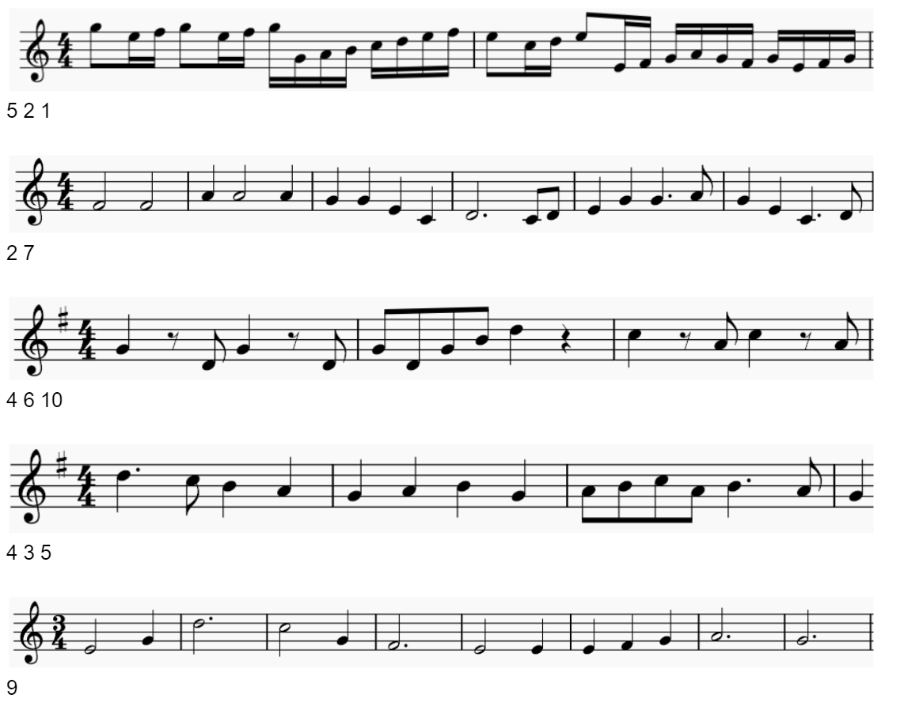

Selective Sounds Detection
Which of the seven notes can you hear in these segments of musical displays?

Click to show hints
I have identified the names of the songs, now what?
The title of the puzzle seems a bit strange, no? Take note of the initials of the title, and replace each initial with keywords from the flavor text that can give something meaningful to search with.